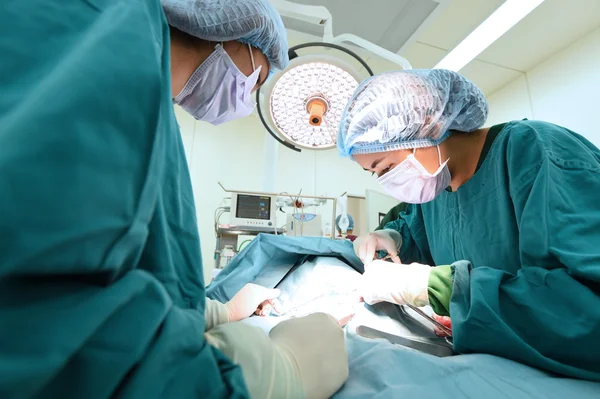
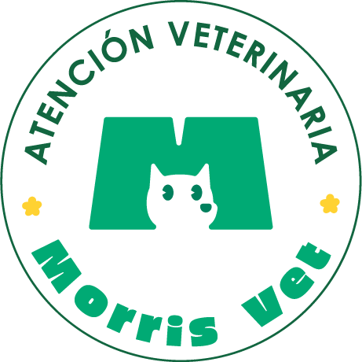

Cirugías de tejidos blandos
Esterilización (ovariohisterectomía y orquiectomía), remoción de masas y tumores, cirugías gastrointestinales, hernias, piometra y cesáreas programadas.
Atención quirúrgica especializada que llega a tu clínica. Tú conservas al paciente y al cliente; nosotros operamos con nuestro equipo y nuestro instrumental.


áreas quirúrgicas cubiertas, de esterilizaciones a urgencias
respondemos y coordinamos el caso el mismo día
inversión en equipamiento: llevamos instrumental e insumos
del vínculo con el cliente se queda en tu clínica
Cobertura quirúrgica pensada para los casos que normalmente tendrías que derivar a otra clínica.
Esterilización (ovariohisterectomía y orquiectomía), remoción de masas y tumores, cirugías gastrointestinales, hernias, piometra y cesáreas programadas.
Cesáreas de emergencia y torsión gástrica: llegamos a tu clínica el mismo día para operar sin mover al paciente.
Extracciones simples y profilaxis dental bajo anestesia.
Ecografía, endoscopía y biopsias guiadas, según el caso y la disponibilidad de equipo.
¿Tu clínica necesita algo fuera de esta lista? Escríbenos y lo evaluamos.
Nos escribes con el diagnóstico o sospecha y la disponibilidad de tu clínica. Si es una urgencia, mejor llámanos directamente.
Te respondemos de inmediato con la cotización, las fechas y el cirujano asignado.
Llegamos con instrumental, insumos y protocolo de bioseguridad. Usamos el quirófano de tu clínica.
Indicaciones de seguimiento post-operatorio para tu equipo y el dueño de la mascota, y quedamos disponibles por WhatsApp para cualquier duda.
Un corredor compacto nos permite llegar rápido, coordinar mejor los horarios y priorizar las urgencias.
¿Tu clínica está fuera de esta zona? Escríbenos igual, evaluamos el caso.
Cada procedimiento lo realiza un cirujano veterinario con experiencia en la especialidad requerida, siguiendo un protocolo de bioseguridad y con los insumos que tu clínica no necesita mantener en stock.
Trabajamos como una extensión de tu equipo: coordinamos contigo por WhatsApp antes, durante y después del procedimiento, y dejamos indicaciones claras para el seguimiento del paciente.
Cada caso lo toma un médico veterinario colegiado con experiencia en la especialidad requerida.
Llevamos todo el material estéril y los insumos del procedimiento; tu clínica no mantiene stock.
Mismo protocolo en cada cirugía, con indicaciones de seguimiento post-operatorio al terminar.
Precios referenciales por procedimiento, qué incluye cada uno y los requisitos prequirúrgicos. El presupuesto final se confirma según la complejidad del caso.
¿Prefieres que te lo enviemos? Escríbenos por WhatsApp.
El equipo de Morris Vet asume la responsabilidad clínica del procedimiento que realiza. Los términos específicos se conversan y quedan definidos junto con tu clínica antes de coordinar la fecha.
Morris Vet lleva el instrumental quirúrgico, los insumos y los materiales de bioseguridad necesarios. Tu clínica pone el espacio (quirófano) y, de preferencia, el equipo de anestesia y monitoreo si ya cuenta con uno.
Puedes pedirnos el tarifario para clínicas con los precios referenciales por procedimiento. Cada cotización final depende del tipo de cirugía, la complejidad del caso y la urgencia. Nos escribes con el caso y te respondemos con el presupuesto antes de coordinar la fecha.
Respondemos de inmediato y, según la disponibilidad, podemos terminar de coordinar la cirugía el mismo día. Si el caso es una urgencia — una cesárea de emergencia o una torsión gástrica — llámanos directamente y lo atendemos de inmediato dentro de la zona de cobertura.
Un espacio quirúrgico habilitado y, de preferencia, equipo de monitoreo y anestesia. Si te falta algo puntual, cuéntanos y vemos qué se puede coordinar igual.
Cuéntanos del paciente y te confirmamos especialista, fecha y presupuesto. Sin membresías ni mínimos mensuales: toda la coordinación es por WhatsApp.
Escribir por WhatsAppTe respondemos con la cotización, los requisitos prequirúrgicos y las fechas disponibles. Si es una urgencia, llámanos al 914 962 401.